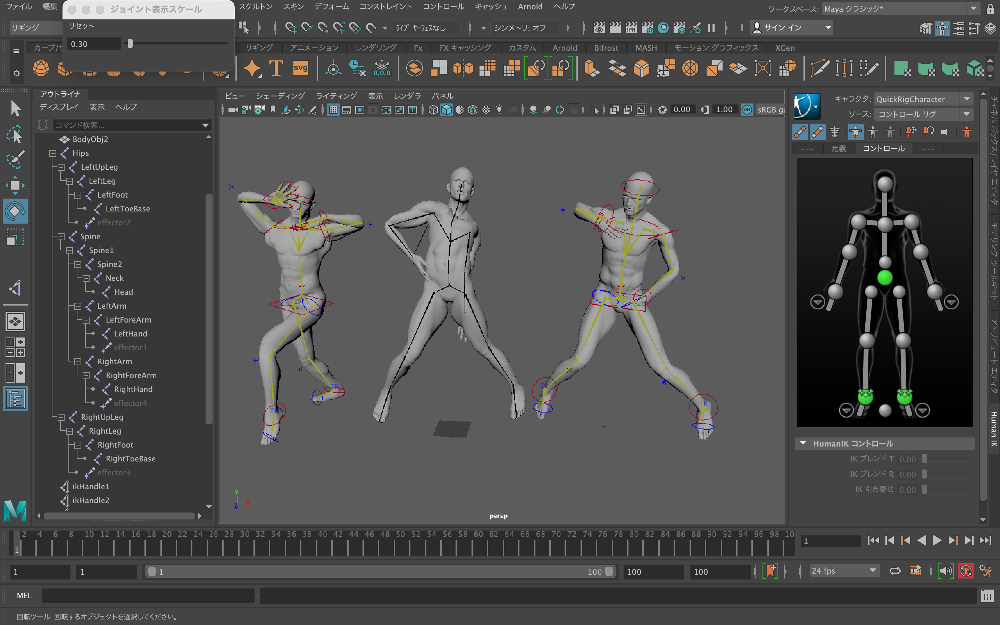
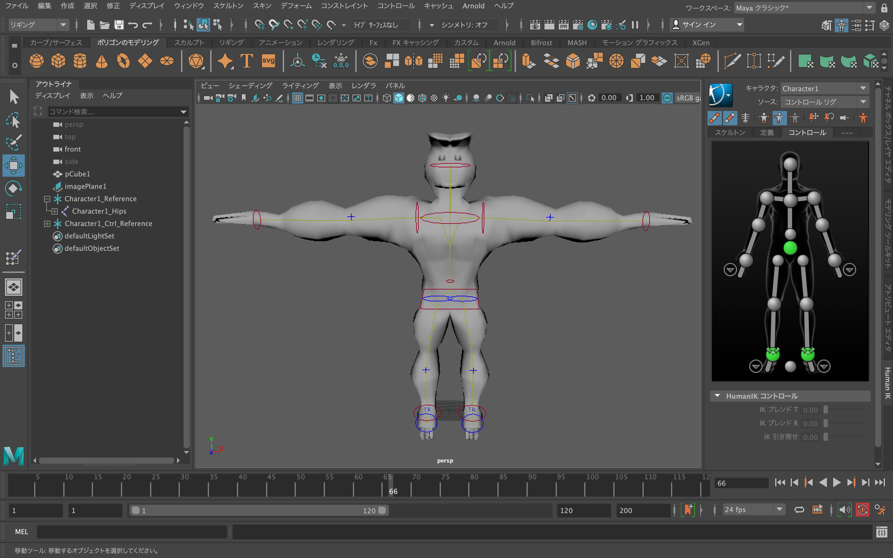
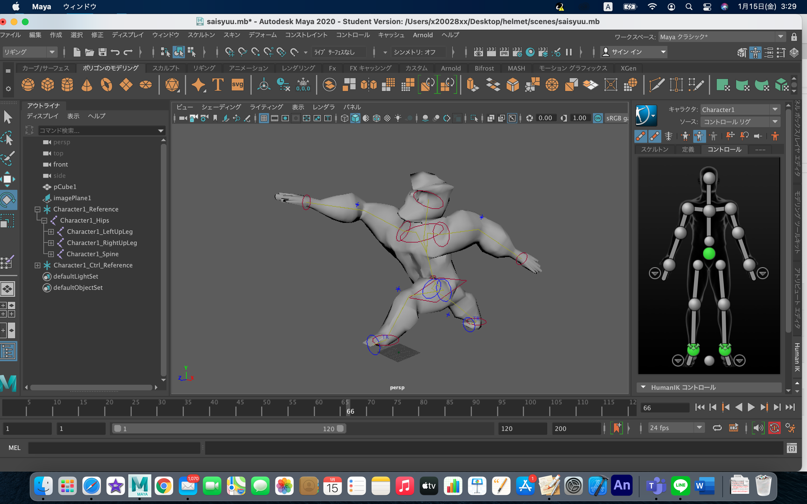
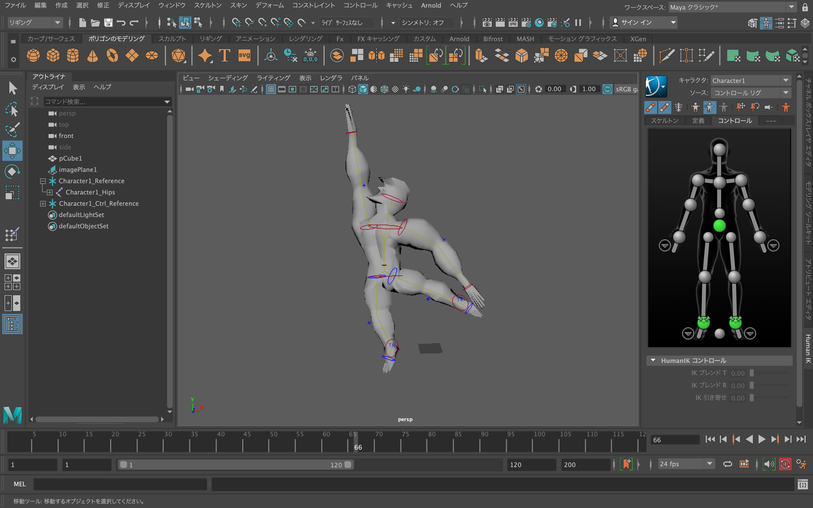

人型モデルのポーズ
あらかじめ用意された３体の人型モデルにポーズを取らせている場面
あらかじめ用意されているしっかりとしたモデルのため、ポーズを変更すること自体は難しくなかった

自分で製作したモデルのT字ポーズ
モデルのテーマは体がゴリラ、顔がアヒルの怪物である
ポリゴン数を増やしてもリアルな体格にできず、とても苦労した

自作モデルのオリジナルポーズ
モデルが走っているようなポーズを取らせた
腰あたりのポリゴンがぐちゃぐちゃにならないように気をつけた

自作モデルのバランスポーズ
モデルのバランスが取れていることがわかるポーズ
この際、手や足を広げてもポリゴンが崩れることがなかったため特にトラブルが起こることなく製作できた